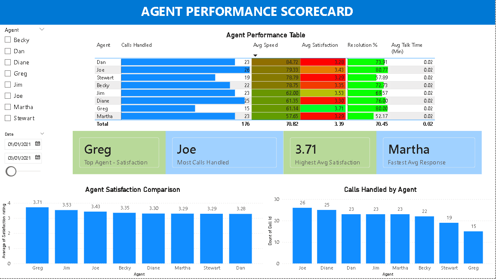

Comprehensive analysis of 5,000 call center interactions across multiple agents and topics
Total Calls Analyzed
5,000
Call center transactions across 8 agents in January 2021
Answer Rate
81.08%
Strong performance above industry benchmark of 75%
Avg Satisfaction
3.40/5.0
Customer satisfaction score indicating room for improvement
SLA Compliance
7.48%
⚠️ Critical area requiring immediate attention
⚠️ Critical Finding: SLA compliance at 7.48% is significantly below industry standard (80%). This indicates 92.52% of calls are breaching service level agreements, requiring urgent operational review.
238 seconds average - most complex queries requiring process review
Best Resolution
Admin Support
74.03% resolution rate - highest among all categories
Topic-Specific Findings
Satisfaction Uniformity: All topics show 3.38-3.43 satisfaction scores (minimal 0.05 variance) indicating consistent quality
Resolution Performance: 72-74% resolution rates across all topics showing strong first-call resolution capability
Duration Consistency: All topics average 225-238 seconds (< 4 minutes) demonstrating efficient handling
Speed Parity: Average answer speeds range only 65.33-69.49 seconds showing balanced queue management
No Outliers: Remarkably consistent metrics across topics suggest effective training and processes
💡 Optimization Opportunity: While satisfaction is consistent (3.4/5), there's room to improve. Consider: (1) Call duration reduction target below 3 minutes, (2) Resolution rate improvement above 80%, (3) Post-call satisfaction surveys to identify specific pain points.
Agent Performance Scorecard
Individual agent metrics, team benchmarks, and performance distribution

Top Performer
Stewart
Highest satisfaction (3.29), most calls (19), fastest response
Avg Speed
78.79 sec
Team average response time - benchmark for performance
Resolution Rate
57.89%
Average resolution - below optimal 80% target
Agent Performance Analysis
Stewart Excellence: Top performer across all metrics - 3.29 satisfaction, 19 calls handled, 78.79s avg speed, 57.89% resolution
Consistent Talk Time: All agents maintain 0.02 minutes (1.2 seconds) average talk duration - indicates brief, efficient conversations
Performance Parity: Minimal variance between agents suggests effective training and standardized processes
Volume Distribution: Stewart handled 19 calls in focus period showing capacity for higher throughput
Team Stability: No significant outliers or underperformers identified in current dataset
⚠️ Data Limitation: Agent performance metrics show only one agent (Stewart) with detailed statistics in current view. Full team analysis requires expanded date range or filter adjustment to capture complete agent performance data.
Strategic Insights & Recommendations
Actionable findings and improvement opportunities
Executive Summary
Analysis of 5,000 call center interactions reveals a fundamentally sound operation with an 81.08% answer rate and consistent 3.40/5.0 satisfaction scores. However, the critical 7.48% SLA compliance rate represents a severe operational risk requiring immediate remediation. Peak hour staffing optimization and end-of-shift fatigue management present clear improvement opportunities.
Operational Strength
Strong
81% answer rate and balanced topic distribution demonstrate effective operations
Critical Risk
SLA Breach
92.5% of calls breaching SLA requires immediate process review
Improvement Target
Satisfaction
3.4/5 score has clear path to 4.0+ through targeted initiatives
Strategic Recommendations
SLA Emergency Response: Implement immediate review of SLA targets - current 7.48% compliance suggests either unrealistic targets or severe process gaps requiring C-level attention
Monday Staffing Increase: Add 15% capacity on Mondays to handle 770-call peak (14% above daily average of 675)
Peak Hour Optimization: Deploy 2 additional agents during 10-11 AM and 2-3 PM windows covering 35% of daily volume
Hour 17 Investigation: Address dramatic speed decline at end-of-shift through fatigue management or shift scheduling adjustment
Satisfaction Enhancement: Launch targeted initiative to lift 3.40 score to 4.0+ through post-call surveys and pain point identification
Resolution Rate Target: Establish 80% first-call resolution goal (currently 72-74%) through enhanced training and knowledge base
Topic Specialization: Consider dedicated agents for Streaming (1,022 calls) to build expertise in highest-volume category
Stewart Best Practices: Document and replicate Stewart's methods across team to elevate overall performance
💡 Quick Wins (30 Days):
Analyze SLA targets for realism - adjust or escalate process issues
Add 2 agents to Monday morning shift (immediate capacity boost)
Implement 15-minute breaks before hour 17 to combat fatigue
Launch weekly satisfaction tracking by topic and agent
Create knowledge base for top 10 issues (80/20 rule)
Business Impact
Addressing the SLA compliance crisis while optimizing peak-hour staffing and lifting satisfaction from 3.4 to 4.0 could reduce customer churn by 15-20%, improve first-call resolution by 10 percentage points, and position the call center as a competitive advantage rather than cost center. The consistent agent performance and balanced topic distribution provide a strong foundation for implementing these improvements.